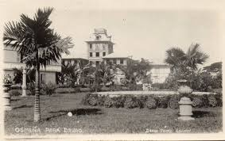
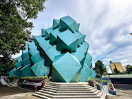
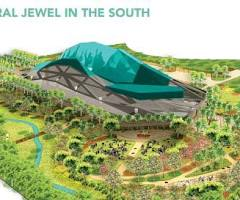

The architecture of Davao del Sur reflects a mix of indigenous, colonial, and modern influences, shaped by its culture and history.
Indigenous architecture in Davao del Sur and the surrounding Davao Region is deeply rooted in the traditions of its diverse ethnolinguistic groups, characterized by stilt houses made from locally sourced materials like bamboo, timber, rattan, and cogon grass. These structures are designed to be sustainable, earthquake-resistant, and climate-responsive, often featuring long eaves for rain protection and elevated floors for flood resistance and safety.

Colonial architectural influence in Davao del Sur, particularly in its capital Davao City, is characterized by a blend of Spanish-era foundations and more prominent American-period structures. Unlike northern regions of the Philippines, Davao's colonial history began later, in the mid-19th century.

Modern architecture in Davao del Sur, particularly in Davao City, is characterized by a shift toward "breathable" tropical designs, sustainable "green" office towers, and high-rise residences that define the city's growing skyline.

Eco and cultural design in Davao del Sur focuses on integrating Mindanaoan indigenous heritage with sustainable practices, often utilizing materials like bamboo and natural fibers. Key approaches include reflecting local tribal dance movements in architecture, adopting open-concept living for tropical climates, and incorporating rainwater harvesting.
